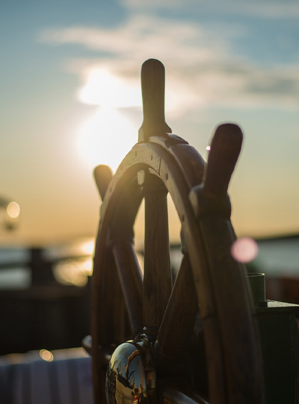
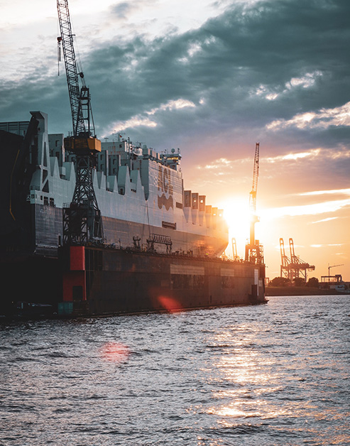

기업개요
-

세계 최고의 해양기업으로 성장
Ceaseless Growth
뿌리깊은 조선역사를 지닌 유럽, 세계 경제의 거대한 축을 이루는 미주
등 세계 조선시장에서, 대우조선해양이 건조한 선박들이 ‘최고 품질의
배’로 각광 받고 있습니다.
대우조선해양에서 대형 해양플랜트를 건조해 본 오일메이저들은 그
기술수준과 납기준수, 고객의 요구를 최대한 만족시키기 위해
노력하는대우조선해양 사람들의 성실한 땀방울에 크게 만족하며
단골고객이 되고 있습니다. -

IT기술을 기반으로한 선박건조기술
Advanced technology
1981년에 준공한 대우조선해양은, 각종 선박과 해양플랜트, 시추선, 부유식
잠수함, 구축함 등을 건조하는 세계 초일류 조선해양전문기업입니다.
490만㎡의 넓은 부지 위에 세계 최대 1백만톤급 도크와 900톤 골리앗
크레인 등의 최적 설비로 기술개발을 거듭해, 고기술 선박 건조에
탁월한 능력을 보유했습니다.
IT기술을 기반으로 체계화 된 선박건조기술과 고난도 해양플랫폼 건조능력,
대형 플랜트 프로젝트 관리능력, 전투잠수함과 구축함을 건조하는
높은 기술력을 고루 갖춰, 최상의 품질을 만들어 냅니다. -
끊임없이 변화와 혁신
Change and innovation
2000년 10월말 독립기업으로 다시 태어난 대우조선해양은 '신뢰와
열정'을 기업문화의 핵심가치로 지정했습니다.
'신뢰'는 인간존중과 배려를 통하여 동료와 조직간의 협력과 믿음을 쌓고,
'열정'은, 더 높은 가치를 향해 끊임없이 변화와 혁신을 추구하며 개인의
능력을 마음껏 발휘하여 자아성취를 이루자는 것을 의미합니다.
| 회사명 | 대우조선해양주식회사 Daewoo Shipbuilding & Marine Engineering Co., Ltd. |
| 창립일 | 1973년 10월 11일 |
| 대표이사 | 이성근 Sung Geun Lee |
| 본사 및 조선소 | 서울특별시 중구 다동 남대문로 125 대우조선해양 Tel. 02-2129-0114 |
| 야드면적/인력 | 490만㎡ / 인력 35,000여명(협력사 포함) |
| 주요생산품 | 상선, 특수선, 육해상플랜트 |